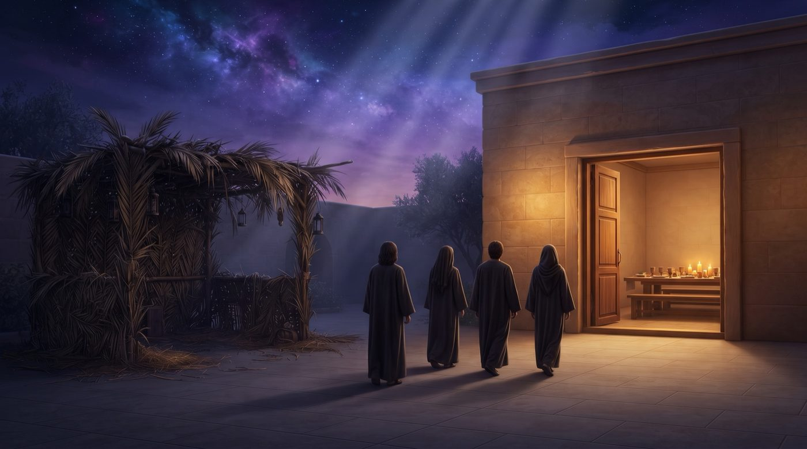
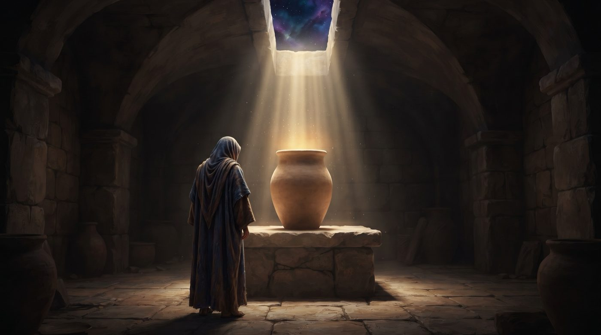
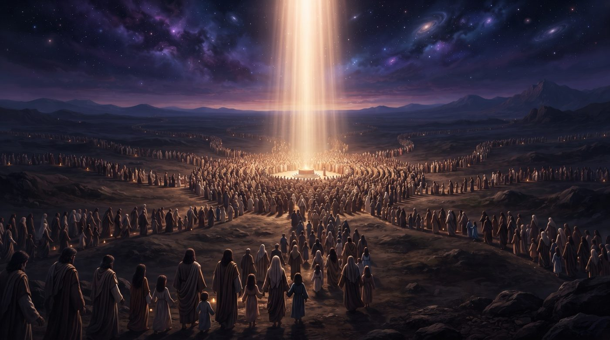
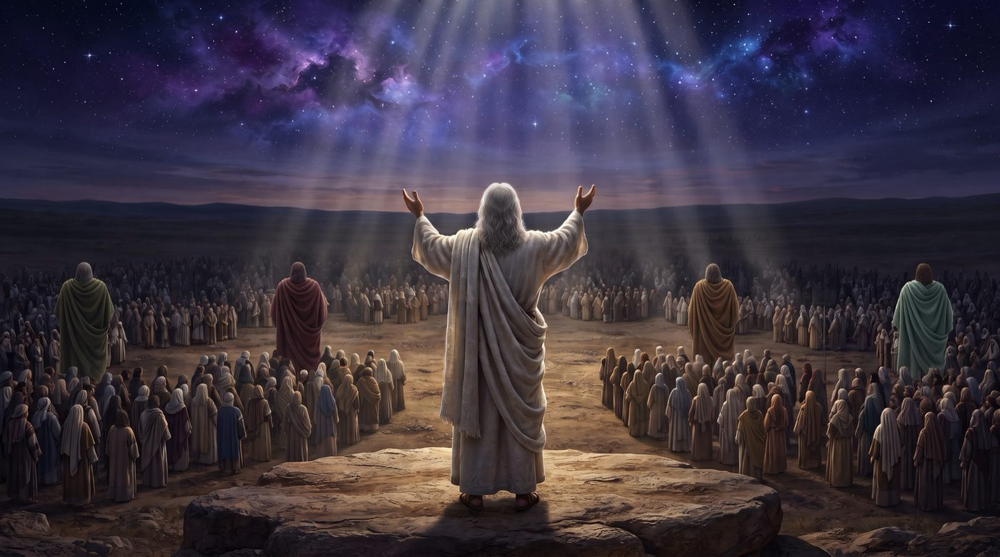
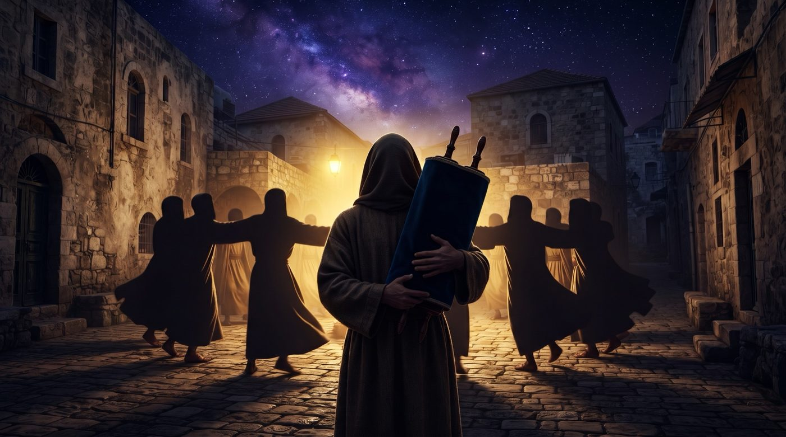

Connaître, c'est s'unir
Au huitième jour, il n'y a plus de soukka ni de loulav : D.ieu retient Son peuple un jour de plus, sans autre raison que d'être ensemble. La Torah appelle ce lien da'at, connaissance, le même mot qui dit l'union, le choix et l'amour, et c'est lui que l'on célèbre en dansant avec le Sefer Torah après l’avoir parcouru et étudié une année entière.
Pendant sept jours, la fête a été chargée d'objets. On a bâti la cabane, on s'y est assis, on a pris les quatre espèces, on a tourné autour de la téva avec les hochaanot. Puis vient un huitième jour qui n'a plus rien de tout cela. La soukka est démontée ou délaissée, le loulav est posé, et la Torah se contente d'une phrase : בַּיּוֹם הַשְּׁמִינִי עֲצֶרֶת תִּהְיֶה לָכֶם (bayom hachemini atseret tihyé lakhem), « le huitième jour sera pour vous une atseret » (Bamidbar 29:35).

Le mot atseret vient de la racine qui veut dire retenir, arrêter. Rachi en tire une image : עָצַרְתִּי אֶתְכֶם אֶצְלִי, כְּמֶלֶךְ שֶׁזִּמֵּן אֶת בָּנָיו לִסְעוּדָה לְכָךְ וְכָךְ יָמִים, כֵּיוָן שֶׁהִגִּיעַ זְמַנָּן לִפָּטֵר, אָמַר, בָּנַי, בְּבַקָּשָׁה מִכֶּם עַכְּבוּ עִמִּי עוֹד יוֹם אֶחָד, קָשָׁה עָלַי פְּרֵדַתְכֶם (atsarti etkhem etsli…), « Je vous ai retenus auprès de Moi, comme un roi qui a invité ses enfants à un festin pour tant de jours ; quand vient le moment de partir, il leur dit : mes enfants, je vous en prie, restez avec moi un jour de plus, votre départ m'est difficile » (Rachi sur Vayikra 23:36).
La guemara ajoute que pendant les sept jours, on offrait au Temple soixante-dix taureaux, pour les soixante-dix nations du monde. Au huitième jour, un seul était offert. פַּר יְחִידִי לָמָּה, כְּנֶגֶד אֻמָּה יְחִידָה (par ye'hidi lama, kenegued ouma ye'hida), « pourquoi un taureau unique ? pour le peuple unique ». Et la guemara donne la parabole d'un roi qui dit à ses serviteurs de lui préparer un grand festin, puis, le dernier jour, dit à celui qu'il aime : עֲשֵׂה לִי סְעוּדָה קְטַנָּה כְּדֵי שֶׁאֵהָנֶה מִמְּךָ (assé li seouda ketana kedei cheehané mimekha), « prépare-moi un petit repas, que je puisse profiter de toi » (Soukka 55b).
Le Zohar décrit la même scène vue d'en haut. Pendant sept jours, la Présence divine nourrit les puissances qui président aux nations, pour qu'elles ne viennent pas troubler sa joie. Puis elle demande : וּמַאן חֶדְוָה דְּיִשְׂרָאֵל, דָּא יוֹמָא תְּמִינָאָה דַּעֲצֶרֶת (ouman 'hedva deIsrael, da yoma temina'a da'atseret), « et quelle est la joie d'Israël ? C'est le huitième jour, celui de l'atseret ». Il explique aussi le nom : וּבְגִין כַּךְ אִקְרֵי עֲצֶרֶת, כְּנִישִׁין, כְּנִישִׁין כֻּלְּהוּ בְּהַאי יוֹמָא (ouvguin kakh ikrei atseret, kenichin kenichin koulhou behai yoma), « c'est pourquoi on l'appelle atseret : rassemblés, tous sont rassemblés en ce jour » (Zohar II, 187a).
Il reste donc un jour sans objet de mitsva, sans raisons, où le Roi garde auprès de Lui ceux qu'Il aime et où rien ne s'interpose. Que se passe-t-il pendant ce jour ? Notre réponse tient en un mot hébreu que la Torah emploie pour signifier la relation la plus intime qui soit : da'at, la connaissance. On l'entend usuellement comme un savoir. La Torah l'emploie pour parler d’union.
Avec l'aide du Ciel et de nos maîtres, nous proposons dans ce chiour de suivre le mot da'at. Nous verrons d'abord pourquoi, dans la langue de la Torah, connaître veut dire s'unir. Le Chem MiChmouel nous montrera ensuite que ce da'at prend la suite de l'ombre de la soukka, et le Ari Z"L que tout le mois de Tichri est un seul mouvement qui s'achève par cette union. Le mot atseret nous apprendra qu'il faut être capable de retenir ce qui a été reçu, et le Sfat Emet que ce da'at vient après coup, comme le livre de Devarim vient au terme du désert.
Le Midrach et le Chem MiChmouel expliqueront pourquoi ce lien demeure, puis nous verrons qu'il exige l'unité du peuple. Vezot HaBerakha, lue en ce jour, montrera que connaître est la forme que prend le choix de D.ieu. Nous comprendrons alors pourquoi on danse avec le sefer torah, et comment le Rambam termine tout son Michné Torah sur ce même mot.
• Le jour qui n'appartient qu'au da'at
• Le da'at, mot de l'union
• De l'ombre au da'at
• Le da'at au terme de l'étreinte
• Retenir le da'at
• Le da'at qui vient après coup
• Le da'at du donateur
• Un seul da'at pour tout un peuple
• Vezot HaBerakha, le da'at de ceux qu'Il a choisis
• Danser avec le da'at
• La terre remplie de da'at
La première fois que la Torah emploie ce verbe, c'est après la sortie du Gan Éden d’Adam et ’Hava : וְהָאָדָם יָדַע אֶת חַוָּה אִשְׁתּוֹ (veha'adam yada et 'Hava ichto), « et l'homme connut 'Hava sa femme » (Bereshit 4:1), au sens d’une union.
Le Tanya en fait la définition même du da'at dans l'âme : וְהַדַּעַת, הוּא מִלְּשׁוֹן ״וְהָאָדָם יָדַע אֶת חַוָּה״, וְהוּא לְשׁוֹן הִתְקַשְּׁרוּת וְהִתְחַבְּרוּת (vehada'at hou milechon veha'adam yada et 'Hava, vehou lechon hitkachrout vehit'habrout), « le da'at vient de l'expression "et l'homme connut 'Hava", c'est un terme d'attachement et de jonction » (Tanya, chapitre 3). Il ne suffit pas, précise-t-il, d'être sage ou intelligent dans la grandeur de D.ieu. Encore faut-il y attacher sa pensée avec force et ne pas l'en détacher.
Nous réaffirmons ce lien chaque matin de semaine. En enroulant la courroie des tefilin autour du doigt, on dit le verset de Hochéa : וְאֵרַשְׂתִּיךְ לִי בֶּאֱמוּנָה וְיָדַעַתְּ אֶת ה' (veerastikh li beemouna veyada'at et Hachem), « Je te fiancerai à Moi dans la fidélité, et tu connaîtras Hachem » (Hochéa 2:22). Les fiançailles et la connaissance forment une seule phrase, et la connaissance y vient en dernier, comme l'aboutissement des fiançailles. Cela se fait de manière physique par le rattachement de la main et sa sacralisation totale à la pratique, la mitsva divine.
Le Rambam dit la même chose dans la langue de la halakha : אֵינוֹ אוֹהֵב הַקָּדוֹשׁ בָּרוּךְ הוּא אֶלָּא בְּדַעַת שֶׁיְּדָעֵהוּ, וְעַל פִּי הַדֵּעָה תִּהְיֶה הָאַהֲבָה, אִם מְעַט מְעַט וְאִם הַרְבֵּה הַרְבֵּה (eino ohev haKadoch Baroukh Hou ela beda'at cheyeda'ehou…), « on n'aime le Saint béni soit-Il que par le da'at avec lequel on Le connaît, et selon la connaissance sera l'amour : si elle est petite, il sera petit, si elle est grande, il sera grand » (Hilkhot Techouva 10:6).
Nous avions consacré de nombreux chiourims à ce sujet. Chemini Atseret y ajoute un moment : le jour de l'année où cette union a lieu. On comprend mieux le petit repas de la guemara. Le Roi ne demande rien de plus à Son peuple que ce da'at : être là, avec Lui, le connaître, et ainsi l’aimer.
Dans la langue de la Torah, connaître quelqu'un, c'est s'unir à lui.
La semaine dernière, nous étions assis « à l'ombre du Makom ». Pourquoi fallait-il une ombre, et pourquoi n'en faut-il plus au huitième jour ? Le Chem MiChmouel répond à partir du nom que le Zohar donne à la soukka : צִלָּא דִמְהֵימְנוּתָא (tséla dimheimnouta), « l'ombre de la foi ».
La foi, explique-t-il, a sa place lorsque l'intelligence est encore voilée. Lorsque le da'at est complet et voit par lui-même, il ne s'agit plus de croire, puisqu'on voit.
Pendant les jours de Souccot, les forces de l'intelligence entrent l'une après l'autre dans l'âme d'Israël, et tant qu'elles ne sont pas toutes entrées, on a besoin de l'ombre qui protège. Puis il écrit : וּכְשֶׁזּוֹכִין לְיוֹם טוֹב הָאַחֲרוֹן אָז יִשְׂרָאֵל מְלֵאִים דַּעַת שְׁלֵמָה, וְאֵין צְרִיכִין שׁוּב לְצִלָּא דִּמְהֵימְנוּתָא (oukhchezokhin leyom tov ha'a'haron az Israel mele'im da'at chelema, veein tserikhin chouv letsila dimheimnouta), « et lorsqu'ils parviennent au dernier jour de fête, Israël est rempli d'un da'at complet et n'a plus besoin de l'ombre de la foi » (Chem MiChmouel, Chemini Atseret). Il compare ce jour à Chavouot, qui s’appelle aussi Atseret et qui n’a pas non plus d’objets de mitsva, où la Torah fut donnée face à face, et c'est pourquoi, dit-il, on y fait la joie de la Torah.
Le Sfat Emet décrit le même passage avec un verset de Michlé : כִּי ה' יִתֵּן חָכְמָה מִפִּיו דַּעַת וּתְבוּנָה (ki Hachem yiten 'hokhma, mipiv da'at outevouna), « car Hachem donne la sagesse, de Sa bouche viennent le da'at et le discernement » (Michlé 2:6). Il y lit tout le mois. La sagesse, c'est Roch Hachana et Kippour, quand D.ieu donne la vie à toute créature. Le da'at, c'est Souccot. Et le discernement, c'est Chemini Atseret : וּתְבוּנָה הוּא בִּשְׁמִינִי עֲצֶרֶת, שֶׁהוּא הִתְיַשְּׁבוּת הַדַּעַת בַּמְּקַבֵּל (outevouna hou biChemini Atseret, chehou hityachvout hada'at bamekabel), « le discernement, c'est Chemini Atseret, qui est l'installation du da'at en celui qui reçoit » (Sfat Emet, Souccot 5636).
Ainsi le da'at de Souccot était encore un don qui entourait (matérialisé par la soukka), et au huitième jour il s'installe à l'intérieur de celui qui le reçoit. Le Sfat Emet cite à l'appui un midrach : un roi distribue des parts à ses serviteurs, et quand vient son fils, il lui donne de ce qui est dans sa propre bouche. Ce que le fils reçoit, conclut-il, c'est la Torah, et c'est pourquoi Israël se réjouit à Simhat Torah plus que de toute autre abondance.
Au huitième jour, l'ombre n'est plus nécessaire : le da'at est entré.
Si le da'at formalise une union, il a une histoire. Le Ari Z"L la retrace sur tout le mois de Tichri, dans ses sermons sur la fête de Souccot. Chaque année à Roch Hachana, explique-t-il, le monde revient à l'état où il se trouvait au jour de sa création, et la relation entre D.ieu et Son peuple doit être refaite étape par étape : וּצְרִיכִים נְסִירָה וַחֲזָרַת פָּנִים בְּפָנִים וְחִבּוּק וְנִשּׁוּק וְזִוּוּג, וְזֶה נִמְשָׁךְ מֵרֹאשׁ הַשָּׁנָה עַד שְׁמִינִי עֲצֶרֶת (outserikhim nessira va'hazarat panim bepanim ve'hibouk venichouk vezivoug, veze nimchakh meRoch Hachana ad Chemini Atseret), « il faut une séparation, puis un retour face à face, une étreinte, un baiser et une union, et cela s'étend de Roch Hachana jusqu'à Chemini Atseret » (Chaar HaKavanot, sermons sur Souccot).
Il répartit ensuite ces étapes sur le calendrier. De Roch Hachana à Kippour, c'est l'étreinte de la gauche, שְׂמֹאלוֹ תַּחַת לְרֹאשִׁי (semolo ta'hat lerochi), « sa gauche sous ma tête », le temps de la rigueur. De Kippour à la fin de Souccot, c'est l'étreinte de la droite, « et sa droite m'enlace », dont nous parlions la semaine dernière. À Hochaana Rabba viennent les baisers. Et à Chemini Atseret, pendant la prière de Moussaf, l'union elle-même, que le Ari Z"L nomme le yi'houd. Il précise que les bontés qui la rendent possible viennent du da'at, la source même de l'union.
Le Ramban, sur le verset de l'atseret, dit la même chose en peu de mots. עֲצֶרֶת הִיא, כִּי שָׁם נֶעְצַר הַכֹּל (atseret hi, ki cham ne'etsar hakol), « c'est une atseret, car là tout est retenu » (Ramban sur Vayikra 23:36).
À Roch Hachana, le cri sans mots était un appel dans la distance. À Chabbat Chouva et Kippour, le retour vers le point qui n'avait pas bougé. À Souccot, l'étreinte de l'endroit que D.ieu donne. Chemini Atseret en est le terme, l’installation du da'at.
Tout le mois de Tichri est un seul chemin, et il aboutit au da'at.
Une union qui ne dure qu'un jour serait peu de chose. Or le nom même de la fête indique ce qu'il faut en faire : atseret, retenir. Qu'est-ce que l'on retient, et comment ?

Le Sfat Emet (Souccot 5634) part d'une difficulté que chacun connaît. À Souccot, l'abondance descend pour toute l'année et pour toutes les créatures, et c'est le sens des soixante-dix taureaux. Mais tout dépend de ceux qui reçoivent, car un récipient ne garde que ce qu'il sait contenir. Il écrit alors : וְעִקַּר הָעֵצָה לִהְיוֹת נִכְנָס הַהֶאָרָה בִּפְנִימִיּוּת הָאָדָם כָּרָאוּי (ve'ikar ha'etsa lihyot nikhnas hahe'ara bifnimiyout ha'adam karaouï), « l'essentiel du conseil (de la mitsva) est que la lumière entre comme il faut à l'intérieur de l'homme ». Cela se fait, précise-t-il, par une réflexion posée : l'homme voit qu'il n'est pas digne de si hautes perceptions, une crainte le saisit, et c'est justement par elle que la lumière s'inscrit dans son cœur. Il rapporte aussi le mot de son grand-père : atseret veut dire לַעֲצוֹר הַ״לָּכֶם״ וּנְגִיעָה עַצְמִית (la'atsor ha« lakhem » ounegui'a atsmit), « retenir le "pour vous" et l'intérêt propre », au travers du petit repas de la Guemara.
Ainsi, retenir la lumière demande de s'effacer devant elle. Étonnamment, celui qui veut la posséder la ramène à lui et la perd ; celui qui se fait petit lui laisse de la place, et elle demeure.
Ce vocabulaire est celui de Vaet'hanan, où nous parlions du keli, le récipient que l'homme se refait par la prière. Le Sfat Emet le reprend pour Chemini Atseret, en 5636. Après les jours de fête, dit-il, nos âmes ont été réparées et Israël est devenu un récipient capable de recevoir. Puis il lit le verset autrement : atseret tihyé lakhem, « maintenant, vous avez à recevoir », שֶׁבָּאתֶם אֶל הַשְּׁלֵמוּת שֶׁהוּא כְּלִי הַמַּחֲזִיק בְּרָכָה, וְהַבְּרָכָה הוּא בִּשְׁמִינִי עֲצֶרֶת וְשִׂמְחַת תּוֹרָה, לָכֵן קוֹרִין וְזֹאת הַבְּרָכָה (chebatem el hachelemout chehou keli hama'hazik berakha, vehaberakha hou biChemini Atseret veSim'hat Torah, lakhen korin Vezot HaBerakha), « car vous êtes parvenus à la plénitude, qui est un récipient qui contient la bénédiction, et la bénédiction, c'est à Chemini Atseret et Simhat Torah ; c'est pourquoi on lit Vezot HaBerakha » (la paracha « et voici la bénédiction ») (Sfat Emet, Souccot 5636).
Au huitième jour, le récipient d'Israël est enfin prêt à retenir la bénédiction.
Pourquoi ce da'at ne vient-il qu'à la fin ? On aurait pu le recevoir dès Roch Hachana. Le Sfat Emet (Souccot 5649) répond avec deux mots du Chir HaChirim : מָשְׁכֵנִי אַחֲרֶיךָ נָּרוּצָה, הֱבִיאַנִי הַמֶּלֶךְ חֲדָרָיו, נָגִילָה וְנִשְׂמְחָה בָּךְ (mochkheni a'harekha narouts'a, heviani hamelekh 'hadarav, naguila venism'ha bakh), « entraîne-moi, nous courrons après Toi ; le Roi m'a fait entrer dans Ses chambres, nous exulterons et nous nous réjouirons en Toi » (Chir HaChirim 1:4).
Israël, dit-il, a d'abord suivi D.ieu sans comprendre. À la sortie d'Égypte, ils sont partis dans le désert, sans provisions, attirés comme on est entraîné, avant d'avoir le da'at complet. C'est ce qui fait le prix de leur fidélité. Puis vient la seconde moitié du verset : וְאַחַר כָּךְ הֱבִיאַנִי הַמֶּלֶךְ חֲדָרָיו נָגִילָה, וְהֵבִינוּ בְּנֵי יִשְׂרָאֵל אַחַר כָּךְ לְמַפְרֵעַ מַה שֶּׁנַּעֲשָׂה בִּיצִיאַת מִצְרַיִם וּבְכָל הַמַּסָּעוֹת בַּמִּדְבָּר (ve'a'har kakh heviani hamelekh 'hadarav naguila, veheivinou bnei Israel a'har kakh lemafrea…), « et ensuite, le Roi m'a fait entrer dans Ses chambres : les enfants d'Israël ont compris après coup ce qui s'était fait à la sortie d'Égypte et dans tous les voyages du désert ». Et il conclut : וּשְׁמִינִי עֲצֶרֶת וְשִׂמְחַת תּוֹרָה כְּמוֹ שֶׁהָיָה מִשְׁנֵה תּוֹרָה אַחַר כָּל אַרְבָּעִים שָׁנָה שֶׁבַּמִּדְבָּר (ouChemini Atseret veSim'hat Torah kemo chehaya Michné Torah a'har kol arba'im chana chebamidbar), « Chemini Atseret et Simhat Torah sont comme le Michné Torah après les quarante années du désert ».
Le livre de Devarim devient ainsi sous cette lecture « le livre du voyage du da'at ». Moché (qui incarne le da'at d’Israël) y relit la route déjà faite, et c'est en la relisant après coup qu'on la comprend. Le da'at de Chemini Atseret est de même nature : il révèle le sens du parcours accompli.
C'est l'occasion de relire notre propre parcours de cette année dans Devarim. À Vaet'hanan, nous parlions du keli : la prière refait l'homme en récipient. Ekev portait sur la crainte, et Michlé dit justement יִרְאַת ה' רֵאשִׁית דָּעַת (yirat Hachem rechit da'at), « la crainte de Hachem est le commencement du da'at » (Michlé 1:7). Avec Réé est venue la be'hira, et nous découvrions que le choix nous précède. Choftim parlait du tamim, qui marche sans connaître l'adresse, Ki Tetsé de la descente qui relève, et Ki Tavo du salaire du monde à venir, qui est la relation elle-même. Nitsavim, enfin, parlait de la parole « très proche de toi, dans ta bouche et dans ton cœur ». Il me semble que ces sept étapes se relisent, à la fin, comme les degrés d'un seul da'at, qui découvre au bout du chemin que tout était proche.
Le da'at arrive à la fin et montre après coup où menait le chemin.
Un don se consomme, mais le lien demeure. Qu'est-ce qui, dans ce que D.ieu donne à Chemini Atseret, ne s'use pas ? Le Sfat Emet (Souccot 5651) répond par un midrach sur un verset de Michlé, « car Je vous ai donné une bonne acquisition, ne délaissez pas Ma Torah ».
Le midrach énumère ce qui distingue cette acquisition de toutes les autres, et il termine ainsi : וְיֵשׁ לְךָ מִקָּח שֶׁמִּי שֶׁמְּכָרוֹ נִמְכַּר עִמּוֹ, אָמַר הַקָּדוֹשׁ בָּרוּךְ הוּא לְיִשְׂרָאֵל, מָכַרְתִּי לָכֶם תּוֹרָתִי, כִּבְיָכוֹל נִמְכַּרְתִּי עִמָּהּ (veyech lekha mika'h chemi chemekharo nimkar imo, amar haKadoch Baroukh Hou leIsrael, makharti lakhem Torati, kivyakhol nimkarti imah), « il existe une acquisition dont le vendeur est vendu avec elle : le Saint béni soit-Il dit à Israël, Je vous ai vendu Ma Torah et, pour ainsi dire, Je Me suis vendu avec elle » (Chemot Rabba 33:1). Le midrach poursuit par la parabole d'un roi qui marie sa fille unique à un autre roi : il ne peut ni la retenir ni se séparer d'elle, et il demande seulement qu'on lui réserve une petite chambre pour habiter auprès d'eux. Le Sfat Emet lit dans cette acquisition la devekout, l'attachement à D.ieu, qu'Israël reçoit en ce jour avec la Torah.
Le Chem MiChmouel, dans ses enseignements sur Chemini Atseret, précise la différence. Tout don, dit-il, comporte deux choses : l'objet donné, et le lien qui se crée entre celui qui donne et celui qui reçoit. Dans une vente, ce lien n'existe qu'un instant, puis chacun repart de son côté, et l'acheteur et le vendeur peuvent ne plus jamais se revoir. Dans les kiddouchin, les cadeaux des fiançailles juives, c'est l'inverse : וְעִנְיַן קִדּוּשֵׁי אִשָּׁה שֶׁכָּל עִנְיַן הַנְּתִינָה הוּא הַחִבּוּר, נִשְׁאַר חִבּוּר זֶה לְעוֹלָם וַאֲפִלּוּ נִתְאַכְּלוּ הַמָּעוֹת (ve'inyan kidouchei icha chekol inyan hanetina hou ha'hibour, nichar 'hibour zé le'olam vaafilou nitakhlou hama'ot), « dans les kiddouchin, toute la raison du don est le lien, et ce lien demeure pour toujours, même si l'argent a été dépensé ».
Ainsi la Torah reçue le jour de Chemini Atseret-Simhat Torah est donnée à la manière des kiddouchin. On peut oublier une page, laisser passer une année sans étudier suffisamment, voire, ‘hasvé chalom, la délaisser. Le lien, lui, reste, parce que le donateur s'est donné avec le don. C'est ce qui fait de la Torah un da'at.
Avec la Torah, D.ieu se donne Lui-même, et ce lien ne s'use pas.
Si le da'at est l'union de D.ieu et de Son peuple, encore faut-il que ce peuple soit un. Le verset de Vezot HaBerakha le dit expressément : תּוֹרָה צִוָּה לָנוּ מֹשֶׁה מוֹרָשָׁה קְהִלַּת יַעֲקֹב, וַיְהִי בִישֻׁרוּן מֶלֶךְ בְּהִתְאַסֵּף רָאשֵׁי עָם יַחַד שִׁבְטֵי יִשְׂרָאֵל (Torah tsiva lanou Moché, morasha kehilat Yaakov, vayehi viYechouroun melekh behitassef rachei am, ya'had chivtei Israel), « Moché nous a prescrit la Torah, héritage de l'assemblée de Yaakov ; et Il fut Roi en Yechouroun, quand les chefs du peuple se rassemblent, ensemble, les tribus d'Israël » (Devarim 33:4-5).

Le Chem MiChmouel pose la question du nom Yechouroun, qui vient de yachar, droit. Une royauté, dit-il, suppose qu'on agisse par l'ordre du Roi et non par sa propre opinion. Or les opinions divergent : כִּי אֵין דַּעְתָּן שֶׁל אָדָם שָׁווֹת, אֲבָל כְּשֶׁעוֹשִׂין וְנִמְשָׁכִין אַחַר צִוּוּי הַשֵּׁם יִתְבָּרַךְ כֻּלָּם עוֹשִׂין כְּאִישׁ אֶחָד בְּלֵב אֶחָד (ki ein da'atan chel adam chavot, aval kecheossin venimchakhin a'har tsivouï Hachem yitbarakh, koulam ossin keich e'had belev e'had), « car les avis des hommes ne sont pas semblables, mais lorsqu'on agit en suivant l'ordre de D.ieu, tous agissent comme un seul homme, d'un seul cœur ». C'est ce qui s'est passé au Sinaï, quand Israël a dit « nous ferons et nous comprendrons » sans chercher d'abord les raisons. Les raisons, précise-t-il, il faut les étudier, mais après avoir reçu. Il faut être Tam, « simple », qui marche droit sans réclamer d'abord le plan.
Ainsi le da'at de chacun, livré à lui-même, peut diviser, mais le da'at reçu ensemble unit. Le Sfat Emet (Souccot 5648) le dit du jour même : וְהוּא מַתָּנָה שֶׁבַּיּוֹם הַזֶּה מִתְאַסְּפִין לִבּוֹת בְּנֵי יִשְׂרָאֵל (vehou matana chebayom hazé mitassefin libot bnei Israel), « c'est un don : en ce jour les cœurs des enfants d'Israël se rassemblent ». Les sept jours avec la soukka et le loulav préparent cette unité, et au huitième jour elle devient réelle.
Le verset place d'ailleurs la royauté au moment précis où les tribus sont « ensemble » : leur rassemblement fait partie de l'union avec D.ieu.
Il n'y a de Roi en Yechouroun que lorsque le peuple est rassemblé.
La dernière paracha que l'on lit en ce jour est la dernière bénédiction de Moché : וְזֹאת הַבְּרָכָה אֲשֶׁר בֵּרַךְ מֹשֶׁה אִישׁ הָאֱ-לֹהִים אֶת בְּנֵי יִשְׂרָאֵל לִפְנֵי מוֹתוֹ (vezot haberakha acher berakh Moché ich haElokim et bnei Israel lifnei moto), « et voici la bénédiction dont Moché, l'homme de D.ieu, bénit les enfants d'Israël avant sa mort » (Devarim 33:1). Pourquoi cette bénédiction est-elle précisément celle du jour du da'at ?

Parce qu'elle est d'un bout à l'autre l'expression d'un choix. Elle s'ouvre sur אַף חֹבֵב עַמִּים (af 'hovev amim), et Rachi explique : « Il a aussi aimé d'un amour particulier les tribus », chacune étant appelée « peuple » (Rachi sur Devarim 33:3). Elle se termine sur אַשְׁרֶיךָ יִשְׂרָאֵל מִי כָמוֹךָ עַם נוֹשַׁע בַּה' (achrekha Israel mi khamokha, am nocha baHachem), « heureux es-tu, Israël, qui est comme toi, peuple sauvé par Hachem » (Devarim 33:29). Le Sfat Emet (Souccot 5648) remarque que tout salut vient de D.ieu, et que la différence est ailleurs : les autres sont sauvés à travers l'ordre de la nature, Israël l'est par le Nom lui-même, au-dessus de la nature. C'est pourquoi, ajoute-t-il, le huitième jour n'appartient « qu'à vous ».
Or le verbe connaître, dans la Torah, est aussi le verbe du choix. Quand D.ieu dit d'Avraham כִּי יְדַעְתִּיו (ki yeda'tiv), « car Je l'ai connu », Rachi explique : לְשׁוֹן חִבָּה... שֶׁהַמְחַבֵּב אֶת הָאָדָם מְקָרְבוֹ אֶצְלוֹ וְיוֹדְעוֹ וּמַכִּירוֹ (lechon 'hiba… chehame'havev et ha'adam mekarvo etslo veyod'o oumakiro), « c'est un terme d'affection, car celui qui aime un homme le rapproche de lui, le connaît et le reconnaît » (Rachi sur Bereshit 18:19). Le prophète Amos le dit au peuple entier : רַק אֶתְכֶם יָדַעְתִּי מִכֹּל מִשְׁפְּחוֹת הָאֲדָמָה (rak etkhem yada'ti mikol mishpe'hot ha'adama), « Vous seuls, Je vous ai connus parmi toutes les familles de la terre » (Amos 3:2). Connaître, ici, veut dire choisir.
Ainsi le da'at de Chemini Atseret est la forme que prend la be'hira, le choix sélectif de D.ieu. À Réé, nous avions vu qu'on ne nous avait pas d'abord demandé de choisir, parce que le choix venait de Lui. Au huitième jour, ce choix devient une connaissance mutuelle. Le Sfat Emet (Souccot 5640) décrit comment chacun répond : שֶׁכָּל שִׁבְעִים אֻמּוֹת לוֹקְחִים כָּל אֶחָד שַׂר שֶׁלּוֹ חֶלְקוֹ וְהוֹלֵךְ לוֹ, וּבְנֵי יִשְׂרָאֵל אוֹמְרִים אֵין לָנוּ חֵפֶץ טוֹב מִמְּךָ (chekol chiv'im oumot lok'him kol e'had sar chelo 'helko veholekh lo, oubnei Israel omrim ein lanou 'hefets tov mimekha), « chacune des soixante-dix nations prend sa part, son ange, et s'en va ; et les enfants d'Israël disent : nous n'avons pas de désir meilleur que Toi ».
La Torah elle-même s'achève sur ce mot. Dans ses tout derniers versets, l'éloge de Moché tient en une phrase : אֲשֶׁר יְדָעוֹ ה' פָּנִים אֶל פָּנִים (acher yeda'o Hachem panim el panim), « que Hachem connut face à face » (Devarim 34:10). La relation la plus haute qu'un homme ait eue avec D.ieu y est décrite par le verbe connaître.
C'est aussi ce que l'on récite en montant à la Torah. La guemara rapporte plusieurs formules pour la bénédiction de l'étude, et on les dit toutes. L'une demande כֻּלָּנוּ יוֹדְעֵי שְׁמֶךָ (koulanou yod'ei chemekha), « que nous soyons tous de ceux qui connaissent Ton Nom ». L'autre dit אֲשֶׁר בָּחַר בָּנוּ מִכָּל הָעַמִּים וְנָתַן לָנוּ אֶת תּוֹרָתוֹ (acher ba'har banou mikol ha'amim venatan lanou et Torato), « qui nous a choisis parmi tous les peuples et nous a donné Sa Torah », et Rav Hamnouna l'appelle « la plus belle des bénédictions » (Berakhot 11b). À Simhat Torah, où tous montent, jusqu'aux plus jeunes enfants, chacun prononce dans la même bénédiction le da'at et la be'hira (le choix).
Au dernier jour, D.ieu connaît ceux qu'Il a choisis, et ils Le choisissent à leur tour.
Si le da'at était un savoir, on fêterait la fin de la Torah par une étude. Or on la fête en dansant, le livre fermé dans les bras. Pourquoi ?

Les hakafot s'ouvrent par le verset אַתָּה הָרְאֵתָ לָדַעַת כִּי ה' הוּא הָאֱ-לֹהִים אֵין עוֹד מִלְּבַדּוֹ (ata horeta lada'at ki Hachem hou haElokim, ein od milvado), « il t'a été donné de voir pour que tu saches que Hachem est D.ieu, il n'en est pas d'autre » (Devarim 4:35). Tout ce qui a été montré à Israël l'a été pour le da'at, l’acquisition d’une connaissance intime que D.ieu est Hachem.
Le Sfat Emet (Souccot 5648) rappelle que Simhat Torah est une coutume, déjà mentionnée par le Zohar, et il l'explique ainsi : Israël a senti la lumière de la Torah qui venait à lui en ce jour, וְהִנְהִיגוּ מֵעַצְמָם וְכִוְּנוּ לְדַעַת אֲבִיהֶם שֶׁבַּשָּׁמַיִם (vehinhigou me'atsmam vekhivnou leda'at avihem chebachamayim), « ils l'ont instituée d'eux-mêmes, et ils ont rejoint le da'at de leur Père qui est aux cieux ». Personne ne l'a ordonnée, et elle correspondait exactement à ce que D.ieu voulait. On ne peut mieux décrire une union : deux volontés qui se rejoignent sans qu'un ordre soit nécessaire.
Rabbi 'Haïm Vital raconte comment son maître vivait ce jour : וְרָאִיתִי לְמוֹרִי זִכְרוֹנוֹ לִבְרָכָה נִזְהָר מְאֹד בְּדָבָר זֶה לְהַקִּיף אַחַר הַסֵּפֶר תּוֹרָה, וּלְרַקֵּד וּלְשׁוֹרֵר לְפָנָיו בְּכָל יְכָלְתּוֹ (veraiti lemori zikhrono livrakha nizhar meod bedavar zé lehakif a'har haSefer Torah, oulerakèd oulechorer lefanav bekhol yekholto), « j'ai vu mon maître, de mémoire bénie, très attentif à tourner derrière le Sefer Torah, à danser et à chanter devant lui de toutes ses forces » (Chaar HaKavanot, sermons sur Souccot). Le soir de la sortie de la fête, il tenait à faire sept hakafot complètes ; on le vit même, ses hakafot achevées, entrer dans une autre synagogue qui avait pris du retard, et recommencer avec eux.
Ainsi le plus grand mystique, qui connaissait le secret de chaque lettre, passait cette nuit à danser avec les sefarims. Le livre reste fermé, parce que le da'at de ce jour transite par le corps entier, qui se tient contre le Sefer Torah comme on se tient contre quelqu'un qu'on aime.
En Simhat Torah, le da'at se vit en serrant le parchemin contre soi.
Le da'at de Chemini Atseret dure un jour, puis l'année recommence. Le même jour, on lit la fin de Devarim et le début de Bereshit, immédiatement après. Ce que l'on a connu une fois doit maintenant se déployer dans le monde, et les prophètes ont annoncé jusqu'où il ira.
Yechayahou décrit le temps de la délivrance par ce seul mot : כִּי מָלְאָה הָאָרֶץ דֵּעָה אֶת ה' כַּמַּיִם לַיָּם מְכַסִּים (ki mal'a ha'arets dé'a et Hachem, kamayim layam mekhassim), « car la terre sera remplie de la connaissance de Hachem, comme les eaux recouvrent la mer » (Yechayahou 11:9). L'image est précise : l'eau ne se pose pas sur le fond de la mer, elle le recouvre entièrement, sans laisser un seul endroit à découvert.
Le Rambam a choisi ce verset pour terminer son œuvre. La dernière halakha du Michné Torah décrit les derniers jours, sans famine ni guerre, sans jalousie ni rivalité, et elle conclut : וְלֹא יִהְיֶה עֵסֶק כָּל הָעוֹלָם אֶלָּא לָדַעַת אֶת ה' בִּלְבַד (velo yihyé essek kol ha'olam ela lada'at et Hachem bilvad), « et le monde entier n'aura pas d'autre occupation que de connaître Hachem » (Hilkhot Melakhim 12:5). Puis il cite le verset de Yechayahou, et son livre s'arrête là.
Le Chemini Atseret de chaque année est une anticipation de ces jours. Pendant quelques heures, un seul peuple, rassemblé autour de la Torah, vit ce que le monde entier vivra : un da'at devenu union avec Lui. Hochéa l'avait annoncé comme des fiançailles : וְאֵרַשְׂתִּיךְ לִי לְעוֹלָם (veerastikh li le'olam), « Je te fiancerai à Moi pour toujours » (Hochéa 2:21). Chaque année, le huitième jour, donne un avant-goût de cet infini.
| כִּי מָלְאָה הָאָרֶץ דֵּעָה אֶת ה' כַּמַּיִם לַיָּם מְכַסִּים | Car la terre sera remplie de la connaissance de Hachem, comme les eaux recouvrent la mer |
|---|
Yechayahou 11:9
Chabbat Chalom et 'Hag Saméa'h !
Par B.A., à Saint-Mandé, 22 Tichri 5787 / 3 octobre 2026
Que le jour où le Roi nous retient auprès de Lui nous trouve prêts, et que ce que nous avons reçu pendant ces fêtes entre en nous pour y demeurer toute l'année.
Et que vienne bientôt le jour où la terre entière sera remplie de la connaissance de Hachem, comme les eaux recouvrent la mer.
| Torah et Prophètes | Talmud et Midrach |
|---|---|
| Bamidbar 29:35 et Vayikra 23:36, l'atseret ; Bereshit 4:1, « l'homme connut 'Hava » ; Devarim 33:1-5, 33:29 et 34:10, Vezot HaBerakha, Roi en Yechouroun, « heureux es-tu, Israël », « que Hachem connut face à face » ; Devarim 4:35, « il t'a été donné de voir pour que tu saches » ; Chir HaChirim 1:4, « entraîne-moi » ; Michlé 1:7 et 2:6, la crainte commencement du da'at, sagesse, da'at et discernement ; Hochéa 2:21-22, les fiançailles et la connaissance ; Amos 3:2, « Vous seuls, Je vous ai connus » ; Yechayahou 11:9, la terre remplie de da'at. | Soukka 55b, le taureau unique et le petit repas ; Berakhot 11b, les bénédictions de la Torah, « qui nous a choisis » et « qui connaissent Ton Nom » ; Chemot Rabba 33:1, « Je Me suis vendu avec elle ». |
| Rishonim | Mystique |
| Rachi sur Vayikra 23:36, « votre départ M'est difficile » ; Rachi sur Bereshit 18:19, connaître comme terme d'affection ; Rachi sur Devarim 33:3, l'amour de chaque tribu ; Ramban sur Vayikra 23:36, la communauté d'Israël partenaire et « là tout est retenu » ; Rambam, Hilkhot Techouva 10:6, l'amour selon le da'at, et Hilkhot Melakhim 12:5, la dernière halakha du Michné Torah. | Zohar II 187a (Tetsavé), la joie d'Israël au huitième jour et « rassemblés » ; Ari Z"L, Chaar HaKavanot, sermons sur Souccot, le chemin de Roch Hachana à Chemini Atseret et les hakafot de Simhat Torah ; Tanya, chapitre 3, le da'at comme attachement. |
| Hassidout | |
| Sfat Emet, Souccot 5634 (retenir la lumière, retenir le « pour vous »), 5636 (sagesse, da'at et discernement ; le récipient qui contient la bénédiction), 5640 (« nous n'avons pas de désir meilleur que Toi »), 5648 (les cœurs rassemblés, Simhat Torah instituée par Israël, « heureux es-tu, Israël »), 5649 (« entraîne-moi », le Michné Torah après le désert), 5651 (le vendeur vendu avec la Torah) ; Chem MiChmouel, Chemini Atseret et Simhat Torah (l'ombre de la foi et le da'at complet ; le don et le lien ; Yechouroun et l'unité). |